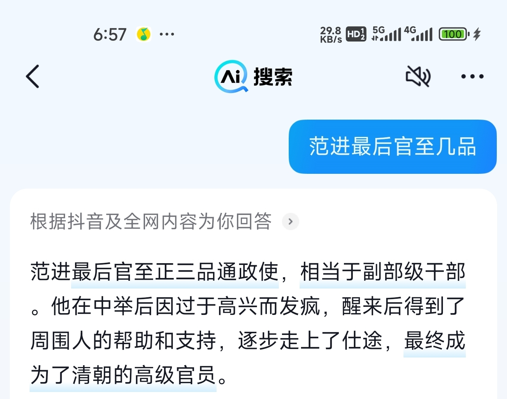
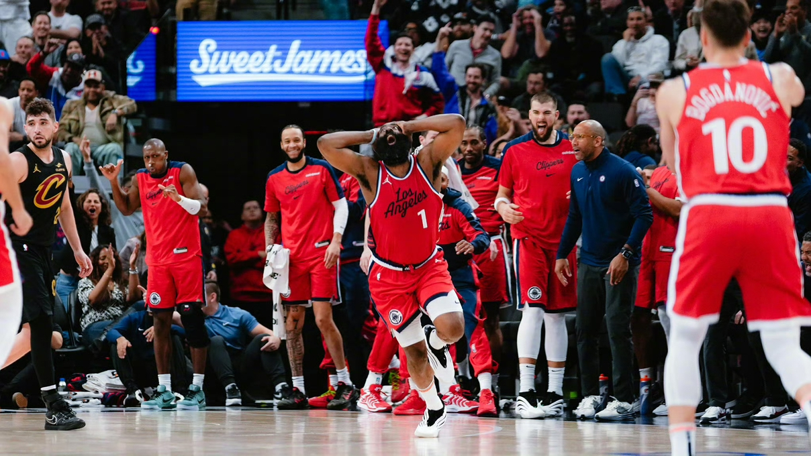
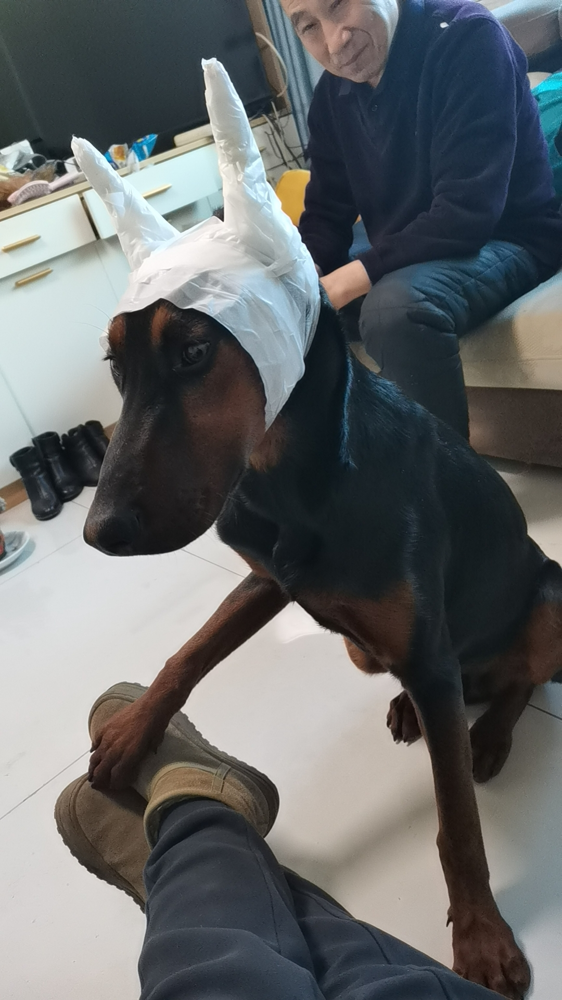
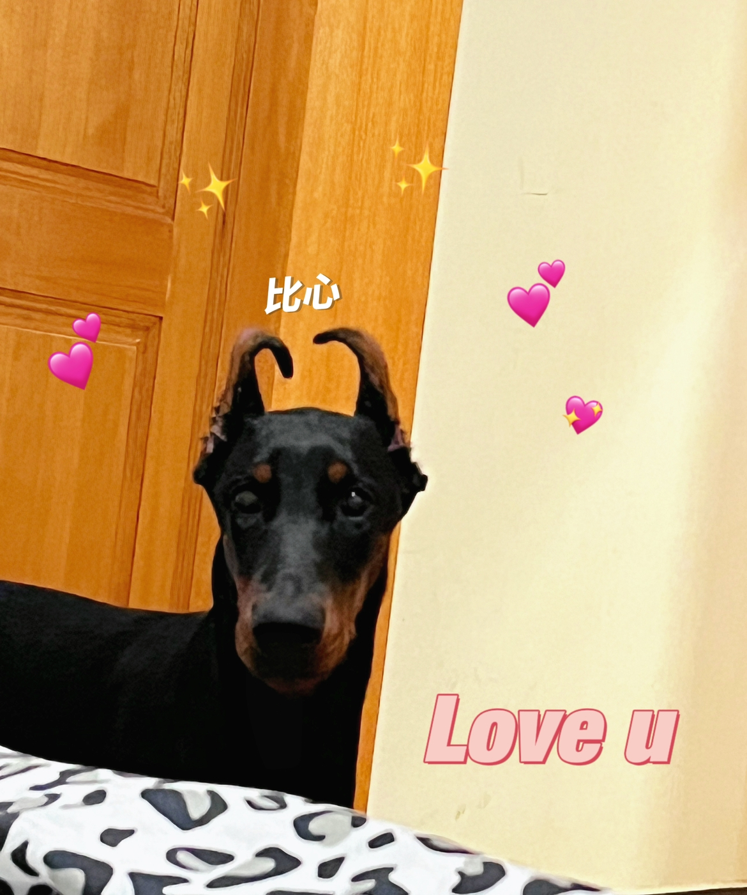
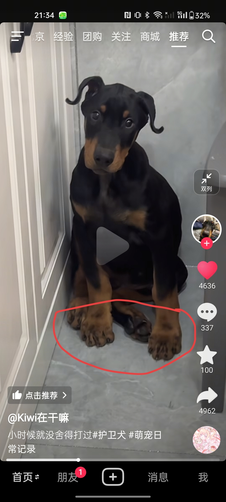
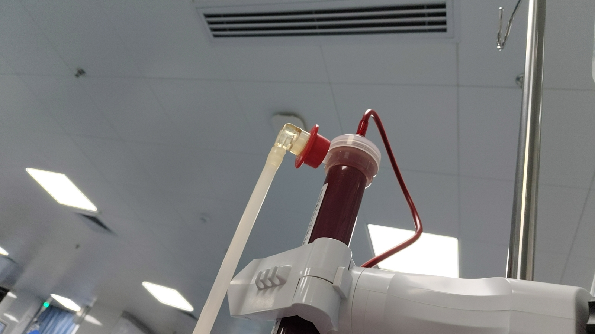

因为他想在白宫，刷抖音[捂脸]
全世界都有女儿，就我俩儿子[流泪][流泪]
自从看过忠犬八公以后 所有关于狗狗的电影都不敢看了[流泪]
永远恨吃狗肉和虐狗的人[流泪]
“有人视我如杂草，有人视我如珍宝”
对不起对不起，当时太年轻
穷小子变正厅级，只疯两小时，人怎么能冷静成这样[黑脸]
我要是成了山东省教育厅厅长，我疯2天
你高中进士，我初中都近视了
对不起，我不该笑你，你起码是考上了才疯，我考不上已经快疯了[泪奔][愉快]
最后干到了副部级，沉默了[泪奔][泪奔][泪奔] 
给你一部手机就老实了[微笑][微笑]
家里没任何背景，54岁能当上省厅厅长，那确实是祖坟烧高香了[流泪][流泪][流泪]
你们要明白，科举上了就是真的当官了，但考公不是
范进你以为你很努力吗？当初有个手机你也不一定有我努力
范进考上是厅长，我们考上是连县衙杂役都不如[捂脸][捂脸][捂脸][捂脸]
全联盟是不是都忘记该怎么防守伦纳德了啊
这是继22年勇士之后 替补席我也全部认识的一支球队[流泪]
最佳时刻 
为什么他们穿西装不像是卖保险的[尬笑]
那我得拿出这张了
内马尔和c罗最帅，不接受反驳[比心]
不是我们崇洋媚外 而是他们不流行娘娘腔[微笑]
洗澡都费劲 还洗上钱了
还是问问吧，现在的孩子都可有主意了。
越秀区大沙头全部都是[憨笑]
你去越秀公园那边看看[微笑]
今天把定位改到广州，第一个视频就是[宕机]

雷总：创死！全都创死！
小米地图来了，就卸了高德[赞]
雷总干房地产吧，全屋小米智能装，想想都好牛[泪奔]
哈哈哈哈哈
ᥬ[蜜蜂狗]ᩤ 狗狗长这样
我家的[泪奔][泪奔] 
同款[裂开] 
为啥一定要立耳呀，那个小卷耳又特别又可爱
这大爪可真好看 
我要不是看你身体好，你觉得你现在能活着跟我说话。

河南正宗新疆大盘鸡
疑似山东人报复社会[听歌]
把我们河南人当日本人整
这次想起我来了啊[呲牙]
狗 我还没睡呢
谢谢你 因为有你在身边 就不再感觉到害怕
男生听之前vs听之后

等着我去让母老虎唱一下
我的手机密码是 098123 所有账号密码是 hd098123 我的支付密码是098123 我的火影二级密码不能告诉你
不好听除非给我唱一首单独给我唱的[害羞][害羞][害羞][害羞]
致敬所有英雄[玫瑰][玫瑰][玫瑰][玫瑰][玫瑰][玫瑰][玫瑰][玫瑰][玫瑰][玫瑰][玫瑰][玫瑰][玫瑰][玫瑰][玫瑰][玫瑰][玫瑰][玫瑰][玫瑰][玫瑰][玫瑰][玫瑰][玫瑰][玫瑰][玫瑰][玫瑰][玫瑰][玫瑰][玫瑰][玫瑰][玫瑰][玫瑰][玫瑰][玫瑰][玫瑰][玫瑰][玫瑰][玫瑰][玫瑰][玫瑰][玫瑰][玫瑰][玫瑰][玫瑰][玫瑰][玫瑰][玫瑰][玫瑰][玫瑰][玫瑰][玫瑰][玫瑰][玫瑰][玫瑰][玫瑰][玫瑰][玫瑰][玫瑰][玫瑰][玫瑰][玫瑰][玫瑰][玫瑰][玫瑰][玫瑰][玫瑰][玫瑰][玫瑰][玫瑰][玫瑰][玫瑰][玫瑰][玫瑰][玫瑰][玫瑰][玫瑰][玫瑰][玫瑰][玫瑰][玫瑰][玫瑰][玫瑰][玫瑰][玫瑰][玫瑰][玫瑰][玫瑰][玫瑰][玫瑰][玫瑰][玫瑰][玫瑰][玫瑰][玫瑰][玫瑰][玫瑰][玫瑰][玫瑰][玫瑰][玫瑰][玫瑰][玫瑰][玫瑰][玫瑰][玫瑰][玫瑰][玫瑰][玫瑰][玫瑰][玫瑰][玫瑰][玫瑰][玫瑰][玫瑰][玫瑰][玫瑰][玫瑰][玫瑰][玫瑰][玫瑰][玫瑰][玫瑰][玫瑰]
致敬[玫瑰][玫瑰][玫瑰]
致敬所有英雄[玫瑰][玫瑰][玫瑰][玫瑰][玫瑰][玫瑰][玫瑰][玫瑰][玫瑰][玫瑰][玫瑰][玫瑰][玫瑰][玫瑰][玫瑰][玫瑰][玫瑰][玫瑰][玫瑰][玫瑰][玫瑰][玫瑰][玫瑰][玫瑰][玫瑰][玫瑰][玫瑰][玫瑰][玫瑰][玫瑰][玫瑰][玫瑰][玫瑰][玫瑰][玫瑰]
致敬所有英雄[玫瑰][玫瑰][玫瑰][玫瑰][玫瑰][玫瑰][玫瑰][玫瑰][玫瑰][玫瑰][玫瑰][玫瑰][玫瑰][玫瑰][玫瑰][玫瑰][玫瑰][玫瑰][玫瑰][玫瑰][玫瑰][玫瑰][玫瑰][玫瑰][玫瑰][玫瑰][玫瑰][玫瑰][玫瑰][玫瑰][玫瑰][玫瑰][玫瑰][玫瑰][玫瑰][玫瑰][玫瑰][玫瑰][玫瑰][玫瑰][玫瑰][玫瑰][玫瑰][玫瑰][玫瑰][玫瑰][玫瑰][玫瑰][玫瑰][玫瑰][玫瑰][玫瑰][玫瑰][玫瑰][玫瑰][玫瑰][玫瑰][玫瑰][玫瑰][玫瑰][玫瑰][玫瑰][玫瑰][玫瑰][玫瑰][玫瑰][玫瑰][玫瑰][玫瑰][玫瑰][玫瑰][玫瑰][玫瑰][玫瑰][玫瑰][玫瑰][玫瑰][玫瑰][玫瑰][玫瑰][玫瑰][玫瑰][玫瑰][玫瑰][玫瑰][玫瑰][玫瑰][玫瑰][玫瑰][玫瑰][玫瑰][玫瑰][玫瑰][玫瑰][玫瑰][玫瑰][玫瑰][玫瑰][玫瑰][玫瑰][玫瑰][玫瑰][玫瑰][玫瑰][玫瑰][玫瑰][玫瑰][玫瑰][玫瑰][玫瑰][玫瑰][玫瑰][玫瑰][玫瑰][玫瑰][玫瑰][玫瑰][玫瑰][玫瑰][玫瑰][玫瑰][玫瑰][玫瑰]
怪不得以前那些老人老了之后神戳戳的自言自语
送进去后，爷爷发现终于有人能接住了[看]
女儿：你再这样我真给你送精神病院了 我：go go go出发喽
等去了精神病医院发现所有人都能接住你的梗[黑脸]
这是脑梗了，想起脑子里面的梗了哈哈哈哈哈哈
老了玩一句梗被护工打出屎了[憨笑]
原来不是爷爷的精神病，是我们不懂爷爷的梗[捂脸]
每次看到这个我都笑的想死[黑脸]
可是我们这些人有子孙的可能性不太大哦
早就脑死亡了，就靠烂梗撑着
看到一个评论说怪不得老一辈儿的人说一些莫名其妙的话
是时候发这张图了
这里面居然没一个活着的[暗中观察]
@lucky-ice 四月是你的后颈
11年了薰的坟头草应该有兵长高了（转的别人发的），真应景了[比心][比心][比心]
2025年还能看到cos博丽灵梦的老二次元真的泪目了[流泪]
四谎+巨人 拉出迪迦的感觉
北京闯荡15年，三环边上两套房，坐骑是奥迪A8，有一个疼我的老婆，和一个大我三岁的孩子。
还是我家宝宝好，从来不打我[比心]
哭了，难受 
听歌前的我，和我听歌后的状态[尬笑][尬笑]
有个疑问，官将首是不是不是谁想当都可以当的啊[尬笑]
我还是喜欢扬州马拉松[看]，各位去搜下就知道了。
还行，至少我们孩子不会到楼顶按空格键
《我们家没有吃早餐这个陋习》
老师：你儿子早恋你知道吗 我：真的？男的女的？
不行，一想到以后有人叫我爸我就绷不住
一想到以后可以有个奴隶就……
我带手机被抓了回去跟外婆讲，我外婆说“你咋被发现了哎，真笨！”[泪奔]
男的女的这个太阴了
兄弟们上IP[愉快]
南京。无锡。苏州。南通。常州。盐城。淮安。徐州。宿迁。扬州。在里面的回复一下我
江苏中考低于600上不了高中👍
赛后王玉栋说要向前辈们学习经验，我突然间心凉了
王玉栋真是奇才，上场敢做动作，停传球流畅，下半场看到不一样的中国队
上一个这样的叫戴伟俊已经悄无声息了
王钰栋在国足A级最年轻出场里排在第四（18岁4个月）。赵旭日（18岁零4天）、周海滨（18岁1个月）、武磊（18岁2个月）分列前三。
踢印尼首发 门将，王大雷 后卫，高准翼，蒋光太，蒋圣龙，胡和滔 中场，赛鸟，蒯纪闻，依木兰， 前锋，王玉栋，刘承宇，武磊 大家觉得怎么样
老师，我们家子涵怎么一直坐着不打球啊[看]
全国青少年犯规大赛[捂脸]
Read more: